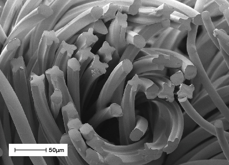
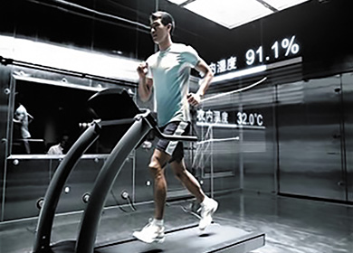

東麗繊維研究所（中国）有限公司[TFRC]
東麗繊維研究所（中国）有限公司は、中国の優れた研究・技術開発に携わる人材を活用して、東レグループの繊維製品をワールドワイドに展開するための研究・技術開発拠点の創設、ならびに中国の繊維産業の発展に貢献することを目的に、2002年3月中国江蘇省南通市に研究・技術開発専門の独立法人として設立されました。衣料用途および産業資材用途を中心とした繊維分野におけるポリマーデザインから重合製糸、高次加工、商品開発までの幅広い研究・技術開発を南通において一貫して行い、新世代のポリマー、繊維、衣料用テキスタイル、産業資材用商品の創出を通じて、東レグループ繊維事業のさらなる拡大に寄与すべく取り組んでいます。

繊維断面写真
重合・製糸研究
ポリエステルを主体とした重合製糸に関する研究・技術開発を中心に基礎研究からパイロットスケールでの生産技術開発を行っています。繊維については極限追求を切り口とした超極細繊維の研究をはじめ、環境調和（植物原料、低環境負荷など）に対応した研究も行っています。

人工気象室における着用試験
テキスタイル研究
衣料および衣料周辺用途に関する糸加工、編成、織布、染色仕上げ加工に関する基礎研究から応用開発、さらには新規商品企画開発まで幅広い領域を担当しています。

エアフィルター
産業資材分野の研究
中国での繊維産業資材事業を拡大するために、石炭ボイラー用集塵機の耐熱バグフィルター用途としてPPS繊維 トルコン®の普及や、エアフィルターの開発などを推進しています。今後も「環境・アメニティー」「エネルギー」分野における応用研究を推進していきます。

テキスタイルテストセンター
テキスタイルテストセンター
機能性テキスタイルの品質評価を主体に、JIS、ISO、ASTM、GB／FZ、AATCCなど様々な標準に基づいた試験を行うとともに、新製品開発及び量産品の品質フォローのための様々なサービスをお客様に提供しています。